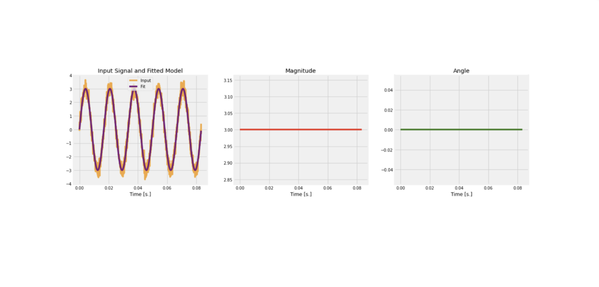
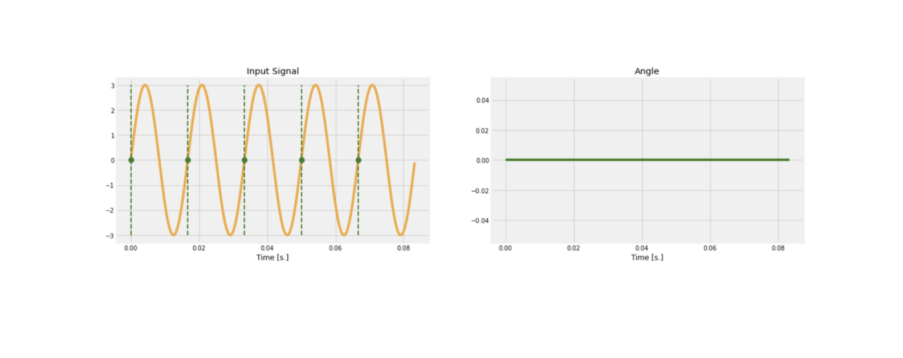
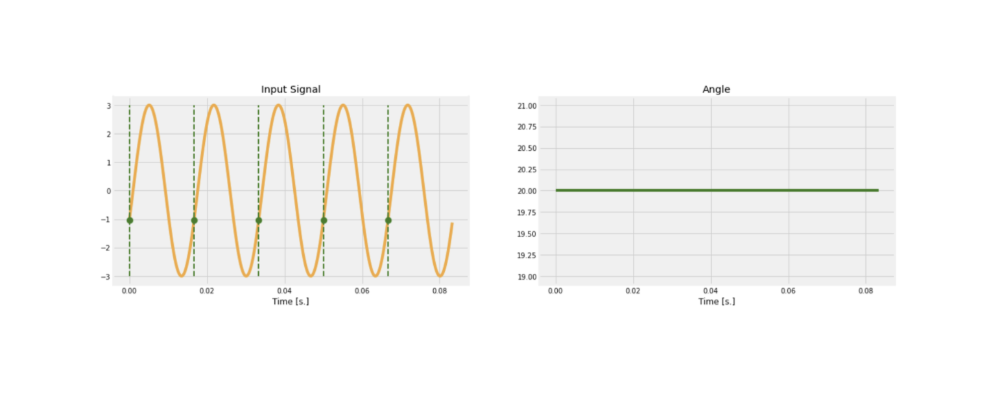
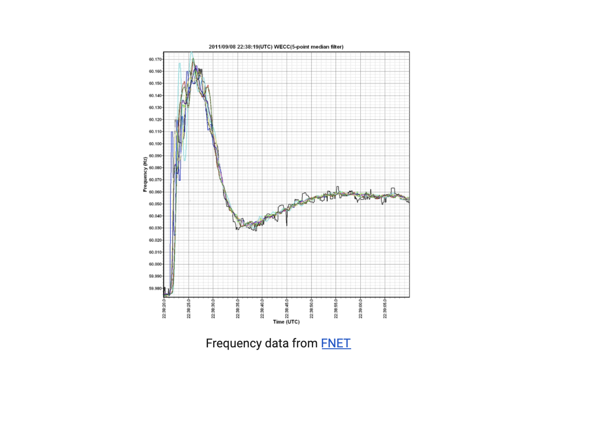

What’s the Angle? (Part 1)¶
Understanding PMU Angle Measurements¶
Author: Mohini Bariya
In an idealized AC electrical system, voltages and currents are perfect sinusoids, oscillating with a particular amplitude, frequency, and phase shift. In a real AC system, they are actually imperfect and time varying, often with multiple frequency components. Nevertheless, we often approximate them as idealized sinusoids with only the fundamental (60 or 50 Hz) frequency, and represent them as “phasors,” which capture everything there is to know about a sinusoid in two variables: the root-mean-square (rms) magnitude, and the phase angle shift, or exact timing of the zero crossing. In this blog post, we review the meaning of the phasor, focusing on the angle measurement.
Converting an arbitrary signal to a phasor is the process of fitting a model to a set of data points—a regression problem. Different PMUs have different algorithms to perform this “fitting,” and may fit different models and therefore find different parameters. For example, some PMUs report frequency and rate-of-change-of-frequency (ROCOF) that are beyond the traditional phasor model which only captures angle and magnitude. Generally, real-life current and voltages will look very close to perfect sinusoids at the nominal grid frequency (60 Hz in North America), with a bit of noise. Below we visualize the “fitting” of a phasor.

In the sunshine dataset available through NI4AI, the PMUs report phasor magnitude and angle only. The magnitude is easy to understand: it is the amplitude of the sinusoidal signal. In the classic phasor model, the angle is the “phase shift” of a sinusoid at nominal frequency. However, in the angle measurements of the sunshine dataset, two different elements are entangled: the phase shift and the frequency shift. We can think of the sunshine PMUs determining the angle measurement as follows (keep in mind this is not a literal description of the algorithm, but an intuitive one): Using a clock reference (this is why PMUs need excellent synchronization), the PMU looks at the input signal every 1/60 seconds (60 Hz). It records the angle of the sinusoid at this moment (we can think of this as where the sinusoid is between a zero crossing and a peak), and reports this as the “angle”. Let us consider what this angle measurement will be in a few different cases.
First, consider an input waveform that is a perfect 60 Hz sinusoid miraculously synchronized with the PMU’s timing. The dashed green lines indicate the moments when the PMU measures the angle. In this case, we see that the angle measurement will always be 0, as the input waveform always crosses zero at the blue lines.

Now, suppose the input waveform is a perfect 60 Hz sinusoid that is delayed from the first one by an angle of, say, 20 degrees. At every moment the PMU measures the angle, the shift will be the same - 20 degrees. Therefore, the angle measurement will be constant at 20. The angle does not change because the signal frequency is nominal, matching the frequency of the PMU checks.

Finally, consider if the system frequency is not nominal, but is instead, say, 63 Hz. Now, every time the PMU checks the angle, the angle will differ. If the frequency stays at 63 Hz, the angle measurement will increase at a constant rate.

In fact, the rate of change of the angle measurement equals the deviation of the signal frequency from nominal.
Physically, the phase shift and frequency shift arise from phenomena at different scales. Frequency shifts from nominal are a system-wide phenomenon that reflects the continual effort to balance generation and demand across the entire electric grid. Below is a plot of the frequency at several PMUs across the Western United States during a major, system-wide disturbance event. The signals align very closely, reflecting the fact that frequency, observed at this scale, is a global quantity.

Phase shifts, which only have meaning when considered between two points in the system, relate to the power flow and impedances between these points. They are a more local quantity.
Frequency and phase shifts are both encoded in the reported PMU angle, and therefore the angle must be interpreted with care. For example, when looking at real angle measurements, we may see a sudden jump in the angle. Is this due to a brief, significant frequency change, or does it arise from a change in impedance or load? A rapid, short change probably arises from the latter. Comparing the angle as measured at another, distant PMU can help answer the question more definitively. If we see the jump there as well, it may in fact be due to a system-wide frequency event. More likely, we will not see the jump at the distant PMU, confirming the hypothesis that it indicates a local impedance or load change.
In the next blog post, we will explore how to work with real PMU angle data.